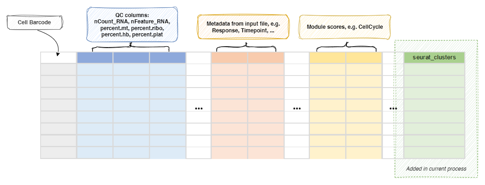

SeuratClustering¶
Cluster all cells or selected T/B cells selected by TOrBCellSelection.
If [TOrBCellSelection] is not set in the configuration, meaning
all cells are T/B cells, this process will be run on all T/B cells. Otherwise,
this process will be run on the selected T/B cells by
TOrBCellSelection.
Note
If you have other annotation processes, including
SeuratMap2Ref process or
CellTypeAnnotation process enabled in the same run,
you can specify a different name for the column to store the cluster information
using envs.FindClusters.cluster-name, so that the results from different
annotation processes won't overwrite each other.
Input¶
srtobj: The seurat object loaded by SeuratPreparing
Output¶
outfile: Default:{{in.srtobj | stem}}.qs.
The seurat object with cluster information atseurat_clustersor the name specified byenvs.ident
Environment Variables¶
ncores(type=int;order=-100): Default:1.
Number of cores to use.
Used infuture::plan(strategy = "multicore", workers = <ncores>)to parallelize some Seurat procedures.
See also: https://satijalab.org/seurat/articles/future_vignette.htmlident: Default:seurat_clusters.
The name in the metadata to save the cluster labels.
A shortcut forenvs["FindClusters"]["cluster.name"].RunUMAP(ns): Arguments forRunUMAP().
objectis specified internally, and-in the key will be replaced with..
dims=Nwill be expanded todims=1:N; The maximal value ofNwill be the minimum ofNand the number of columns - 1 for each sample.dims(type=int): The number of PCs to usereduction: The reduction to use for UMAP.
If not provided,sobj@misc$integrated_new_reductionwill be used.<more>: See https://satijalab.org/seurat/reference/runumap
RunPCA(ns): Arguments forRunPCA().FindNeighbors(ns): Arguments forFindNeighbors().
objectis specified internally, and-in the key will be replaced with..reduction: The reduction to use.
If not provided,sobj@misc$integrated_new_reductionwill be used.<more>: See https://satijalab.org/seurat/reference/findneighbors
FindClusters(ns): Arguments forFindClusters().
objectis specified internally, and-in the key will be replaced with..
The cluster labels will be saved in cluster names and prefixed with "c".
The first cluster will be "c1", instead of "c0".resolution(type=auto): Default:0.8.
The resolution of the clustering. You can have multiple resolutions as a list or as a string separated by comma.
Ranges are also supported, for example:0.1:0.5:0.1will generate0.1, 0.2, 0.3, 0.4, 0.5. The step can be omitted, defaulting to 0.1.
The results will be saved in<ident>_<resolution>.
The final resolution will be used to define the clusters at<ident>.<more>: See https://satijalab.org/seurat/reference/findclusters
cache(type=auto): Default:/tmp.
Where to cache the information at different steps.
IfTrue, the seurat object will be cached in the job output directory, which will be not cleaned up when job is rerunning.
Set toFalseto not cache the results.
SeeAlso¶
Metadata¶
The metadata of the Seurat object will be updated with the cluster
assignments:
